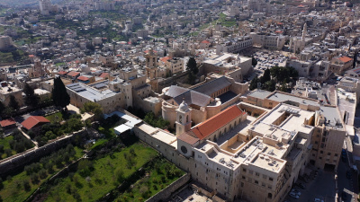
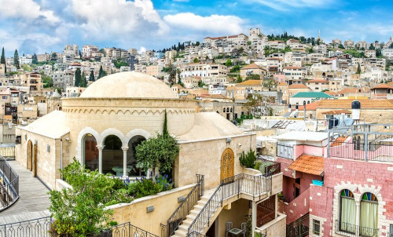

Lugares Sagrados da Bíblia
A Bíblia não é apenas um livro de histórias — é um registro histórico de eventos que aconteceram em lugares reais, que você pode visitar até hoje. Cada cidade, monte e rio mencionado nas Escrituras carrega uma história que moldou a fé de bilhões de pessoas ao longo dos séculos. Conheça abaixo os lugares mais importantes da história bíblica e onde eles estão localizados no mundo atual.
📍 Jerusalém / A Cidade Santa
A cidade de Jerusalém é sem dúvida o lugar mais importante de toda a história bíblica. Ela aparece centenas de vezes ao longo das Escrituras e é sagrada para três grandes religiões: o judaísmo, o cristianismo e o islamismo. No Antigo Testamento, Jerusalém foi conquistada pelo rei Davi por volta de 1000 a.C. e se tornou a capital do reino de Israel. Foi seu filho Salomão quem construiu o primeiro grande Templo de Jerusalém, considerado a morada de Deus na terra, onde ficava a Arca da Aliança. No Novo Testamento, Jerusalém é o cenário dos últimos dias de Jesus na terra. Foi ali que ele entrou montado num jumento sendo aclamado pelo povo, celebrou a Última Ceia com seus discípulos, foi julgado por Pôncio Pilatos, crucificado no monte Calvário e, segundo a fé cristã, ressuscitou ao terceiro dia. Hoje Jerusalém é uma das cidades mais visitadas do mundo e ainda guarda em suas ruas e monumentos a memória viva de toda essa história.

📍 Belém — O Berço do Salvador
Belém é uma cidade pequena localizada a apenas oito quilômetros ao sul de Jerusalém, na Cisjordânia [sem o termo "conhecida como", pois Cisjordânia é o nome oficial atual] . Apesar do seu tamanho, ela carrega um dos eventos mais importantes da história humana: o nascimento de Jesus Cristo. O profeta Miquéias já havia anunciado séculos antes que de Belém sairia aquele que seria o governante de Israel (Miquéias 5:2). Quando Maria e José chegaram à cidade para o recenseamento ordenado pelo imperador Augusto, segundo os evangelhos, não havia lugar na hospedaria, e Jesus nasceu em uma manjedoura. Belém também é a cidade onde nasceu o rei Davi, o maior rei de Israel, e onde Rute e Noemi se estabeleceram após retornarem de Moabe (Livro de Rute) . A cidade é mencionada desde os primeiros livros da Bíblia e permanece até hoje como um dos destinos de peregrinação cristã mais importantes do mundo. A Basílica da Natividade, construída sobre o local tradicional do nascimento de Jesus, é uma das igrejas cristãs mais antigas ainda em funcionamento no mundo.

📍 Nazaré — A Cidade onde Jesus Cresceu
Nazaré era uma pequena aldeia na região da Galileia, no norte de Israel. Foi ali que Maria recebeu o anúncio do anjo Gabriel sobre a concepção de Jesus, e foi nessa cidade que Jesus passou a maior parte de sua vida — cerca de trinta anos — antes de iniciar seu ministério público. Por isso ele era frequentemente chamado de Jesus de Nazaré ou Jesus Nazareno. Quando Natanael soube que o Messias vinha de Nazaré, ele perguntou com ceticismo: "Pode vir alguma coisa boa de Nazaré?" (João 1:46). Era uma cidade pequena e sem prestígio, o que tornava ainda mais surpreendente que o Salvador do mundo tivesse crescido ali. O evangelho de Lucas relata que no início do seu ministério Jesus foi à sinagoga de Nazaré, leu o livro de Isaías e declarou que aquela profecia se cumpria naquele dia (Lucas 4:16-21) . A reação dos moradores foi de incredulidade e rejeição. Hoje Nazaré é a maior cidade árabe de Israel e abriga a Basílica da Anunciação, construída sobre o local onde a tradição indica que ficava a casa de Maria.

📍 Rio Jordão — As Águas do Batismo
O Rio Jordão é um dos rios mais famosos da história bíblica. Ele nasce nas encostas do Monte Hermom, no norte de Israel, e deságua no Mar Morto, percorrendo cerca de 360 quilômetros ao longo do vale entre Israel e a Jordânia. No Antigo Testamento, o Jordão foi o rio que os israelitas atravessaram de forma milagrosa sob a liderança de Josué para entrar na Terra Prometida (Josué 3). As águas do rio se dividiram assim como o Mar Vermelho havia se dividido para Moisés. Também foi no Jordão que o profeta Eliseu ordenou ao general Naamã que se mergulhasse sete vezes para ser curado da lepra (2 Reis 5). No Novo Testamento, o Rio Jordão é o cenário do batismo de Jesus por João Batista, um dos momentos mais marcantes dos evangelhos. Foi nesse momento que o céu se abriu, o Espírito Santo desceu em forma de pomba sobre Jesus e uma voz do céu declarou: "Este é o meu Filho amado, em quem me agrado" (Mateus 3:17; Marcos 1:11; Lucas 3:22). Até hoje peregrinos de todo o mundo visitam o Rio Jordão para serem batizados nas mesmas águas onde Jesus foi batizado.

📍 Getsêmani — O Jardim da Agonia e da Entrega
O Jardim do Getsêmani fica nas encostas do Monte das Oliveiras, do lado de fora dos muros de Jerusalém, às margens do vale do Cedrom. O nome Getsêmani significa "prensa de azeite" em aramaico, uma referência às oliveiras que cobriam aquela região. Foi para esse jardim que Jesus se retirou com seus discípulos na noite em que foi preso, após a Última Ceia. Os evangelhos descrevem que Jesus, sabendo o que estava prestes a acontecer, se prostrou em oração em profunda angústia. O evangelho de Lucas relata que seu suor era como gotas de sangue caindo sobre a terra (Lucas 22:44) — um fenômeno médico real chamado hematidrose, que ocorre em situações de estresse extremo. Foi no Getsêmani que Jesus pronunciou uma das orações mais conhecidas da Bíblia: "Pai, se queres, afasta de mim este cálice. Todavia, não se faça a minha vontade, mas a tua" (Lucas 22:42). Foi também ali que Judas chegou com os soldados e o traiu com um beijo, levando à sua prisão. Hoje o jardim ainda existe e preserva algumas oliveiras que, segundo estudos científicos, têm entre 900 e 1.000 anos de idade. Embora não sejam as mesmas árvores da época de Jesus, são descendentes diretas delas. A Igreja de Todas as Nações foi construída ao lado do jardim e é um dos pontos de visitação mais emocionantes de Jerusalém.

📍 Mar da Galileia
O Mar da Galileia, também chamado de Lago de Genesaré ou Mar de Quinerete, é na verdade um lago de água doce localizado no norte de Israel. Com cerca de 21 quilômetros de comprimento e 13 de largura, ele é o maior lago de água doce de Israel e uma das fontes de água mais importantes da região. Foi nas margens do Mar da Galileia que Jesus chamou seus primeiros discípulos, a maioria deles pescadores como Pedro, André, Tiago e João. Ali ele realizou alguns de seus milagres mais conhecidos, como caminhar sobre as águas, acalmar a tempestade com uma palavra e multiplicar os pães e os peixes para uma multidão de mais de cinco mil pessoas. A região ao redor do lago era o coração do ministério de Jesus na Galileia. A cidade de Cafarnaum, localizada às suas margens, era frequentemente chamada de "cidade de Jesus" e o lugar onde ele realizou muitas curas e ensinamentos. Hoje o Mar da Galileia continua sendo habitado e pescado, assim como era no tempo de Jesus. Um barco de pesca do primeiro século foi encontrado preservado em seu fundo em 1986 (conhecido como "Barco de Jesus" ou "Barco de Genesaré") , dando uma imagem vívida da vida dos discípulos.